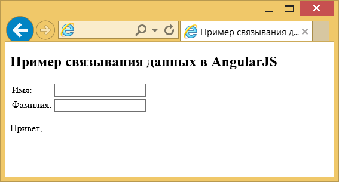
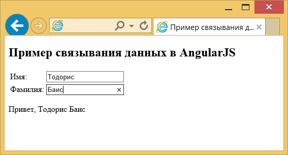

Связывание данных в AngularJS
В этом разделе мы увидим, как мы можем легко обновлять наши представления с помощью ngModel. Прежде всего, согласно приложениям Angular, связывание данных — это автоматическая синхронизация данных между моделью и представлением (для тех, кто не в курсе всего этого вообще, пожалуйста, взгляните на шаблон MVC).
Что касается реализации в Angular, представление является проекцией модели во времени. При изменении модели изменения отражаются в представлении, и наоборот.
В целях лучшего понимания упомянутого связывания данных или сравнения классических систем шаблонов с Angular, пожалуйста, обратитесь к официальной документации.
Вступление
Идея
Мы продемонстрируем реализацию связывания данных, отображая имя пользователя в представлении, в соответствии с моделью. В частности, есть два текстовых поля, одно для имени пользователя, а второе для фамилии, а также выводится приветствие, зависимое от ввода пользователя.
Что вам нужно знать
Шаблоны
В Angular шаблоны написаны на HTML, который содержит специфичные для Angular элементы и атрибуты. Angular комбинирует шаблон с информацией от модели и контроллера для отображения динамического представления, который пользователь видит в браузере.
Вы можете использовать следующие элементы и атрибуты Angular:
- Директива — атрибут или элемент, который дополняет существующий элемент в DOM или представляет собой повторно используемый компонент DOM.
- Разметка — двойные фигурные скобки {{}}, чтобы привязать выражения к элементам.
- Фильтр — форматы данных для отображения.
- Элементы форм — проверяет пользовательский ввод.
Для получения более подробной информации о шаблонах Angular, пожалуйста, обратитесь к официальной документации.
ngModel
Директива ngModel связывает <input>, <select>, <textarea> (или произвольный элемент формы) со свойством в $scope с помощью NgModelController, который создаётся и обрабатывается этой директивой.
У ngModel есть несколько обязанностей (вы можете прочитать обо всех в официальной документации), но для этого примера важной является обязанность связывать представление с моделью, которую требуют другие директивы.
Прежде, чем погрузиться в исходный код этого примера, важно знать, что ngModel попытается привязаться к свойству, предоставленному путём оценки выражения в текущем $scope. Это означает, что если свойство в $scope не существует, оно будет создано неявно и добавлено в $scope.
Пример
Одного файла достаточно!
<!DOCTYPE html>
<html ng-app>
<head>
<meta charset="utf-8">
<title>Пример связывания данных в AngularJS</title>
<script src="//cdnjs.cloudflare.com/ajax/libs/angular.js/1.3.15/angular.min.js"></script>
</head>
<body>
<h2>Пример связывания данных в AngularJS</h2>
<table>
<tr>
<td>Имя:</td>
<td><input ng-model="firstName" type="text"></td>
</tr>
<tr>
<td>Фамилия:</td>
<td><input ng-model="lastName" type="text"></td>
</tr>
</table>
<p>Привет, {{firstName}} {{lastName}}</p>
</body>
</html>Во-первых, очевидно, мы должны определить, что это приложение Angular (строка 2). Во-вторых, мы создаём вид таблицы исходя из наших потребностей: две строки (имя и фамилия), в каждой по две колонки (с соответствующим текстовым полем для имени и фамилии). Наконец, мы показываем наше сообщение в строке 20.
Весь процесс основан на присваиваемых переменных в ng-model. Таким образом, это работает как вложенный контроллер, связывающий данные с нашим представлением. Этот вид данных может быть получен/показан с помощью фигурных скобок в разметке Angular.
Как правило, тег <input>, когда применяется совместно с ng-model, обеспечивает привязку данных, управление состоянием и проверку.
Демонстрация
Сперва, пожалуйста, взгляните на этот пост, просто чтобы понять, почему вы должны развернуть это приложение на локальном сервере, а не просто выполнить его в браузере. Доступ к веб-приложение с локального сервера:

Рис. 8.1. Исходное состояние приложения
Теперь добавим некоторые значения.

Рис. 8.2. Добавление данных.
Ура, это работает!
Скачать
Вы можете скачать полный исходный код этого примера здесь: angularjs_data_binding.zip.